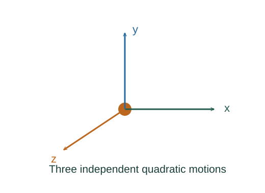

Derive ideal-gas internal energy and heat capacities
Each active quadratic term contributes /2 per molecule. Multiply by f and the molecule count N = nNA.
What the symbols mean
f: number of active independent quadratic degrees of freedom; ,: molar heat capacities; n: fixed mole count.
When this applies
Classical ideal gas, active modes constant over the range; pressure–volume work only.
Developing the argument

Add equipartition terms
Each active quadratic term contributes /2 per molecule. Multiply by f and the molecule count N = nNA.
A closer lookDerive the energy per quadratic term ↗Differentiate at constant volume
With no volume work, Q = ΔU. The molar constant-volume heat capacity is the temperature derivative divided by n.
Include work at constant pressure
The ideal-gas equation gives pΔV = nRΔT. At fixed pressure the heat must supply both the internal-energy increase and this work.
Integrate over a finite temperature change
Ideal-gas internal energy depends on temperature. Constant gives ΔU = nCVΔT for any path; a chosen energy reference yields U = nCVT.
A worked example
For a monatomic gas f = 3, = 3R/2, = 5R/2 and γ = 5/3.
Derivation behind this calculation ↗A point to keep straight
Classical active-mode counting fails when quantum levels freeze out. U = nCVT also contains a choice of additive energy constant.
Check the assumptions and derivation ↗